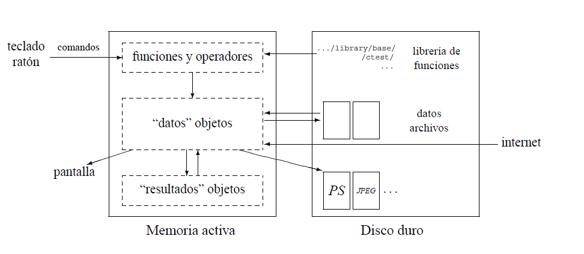
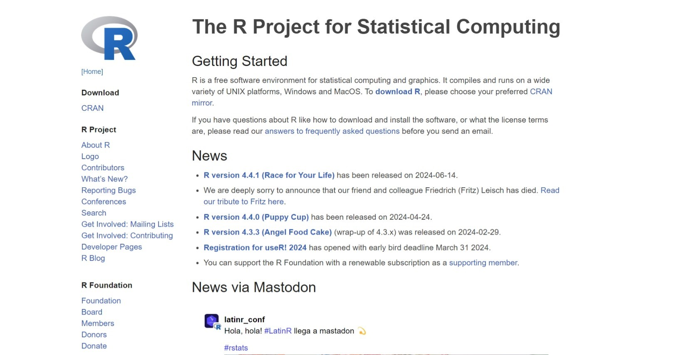
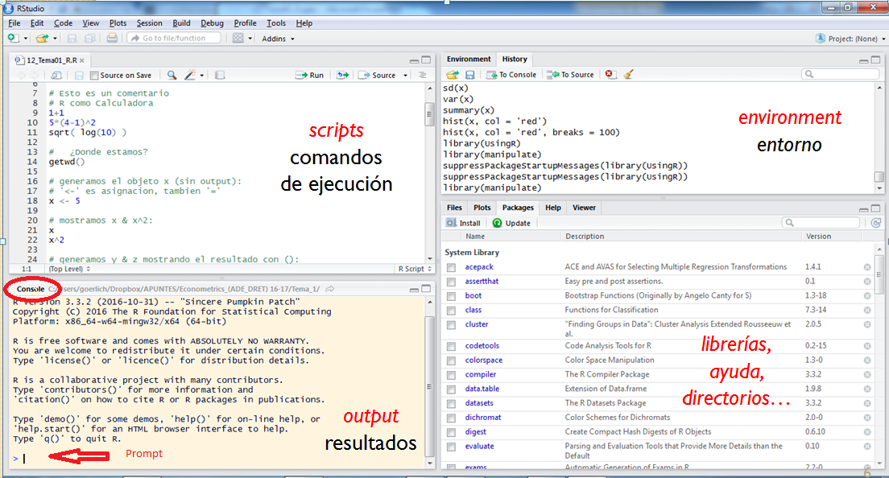

3+2[1] 5R es un lenguaje de programación y un entorno de software creado con el propósito de facilitar el análisis estadístico, la visualización de datos y la manipulación de información en distintos formatos. Desde su origen, se ha consolidado como una de las herramientas más utilizadas en disciplinas como la estadística, la ciencia de datos, las ciencias de la salud, la economía y muchas otras áreas que requieren un manejo intensivo de datos.
A diferencia de otros lenguajes de programación que necesitan compilar el código en un archivo ejecutable antes de poder utilizarlo, R es un lenguaje interpretado. Esto significa que el usuario puede escribir y ejecutar instrucciones de manera interactiva, observando los resultados de forma inmediata sin pasar por un proceso de compilación previo. Esta característica favorece la experimentación, ya que permite probar diferentes enfoques, realizar ajustes rápidos y explorar conjuntos de datos con mayor agilidad.
Además, R cuenta con una amplia comunidad que ha desarrollado miles de paquetes adicionales, lo que amplía enormemente sus capacidades. Estos paquetes permiten realizar desde análisis estadísticos avanzados hasta la creación de gráficos altamente personalizados, integrando incluso técnicas modernas de aprendizaje automático y minería de datos.
Gracias a esta combinación de flexibilidad, interactividad y ecosistema colaborativo, R se ha convertido en una herramienta indispensable tanto para quienes se inician en el análisis de datos, como es nuestro caso, como para profesionales que trabajan en proyectos de investigación o en aplicaciones prácticas de gran escala.
La historia de R comienza en 1992, cuando Robert Gentleman y Ross Ihaka, del Departamento de Estadística de la Universidad de Auckland (Nueva Zelanda), iniciaron el desarrollo de un nuevo lenguaje de programación orientado al análisis estadístico. Sin embargo, sus orígenes se remontan más atrás, ya que R tiene sus raíces en el lenguaje S, creado a finales de los años setenta por John Chambers y su equipo en los Laboratorios Bell (hoy Alcatel-Lucent) en Nueva Jersey. El nombre “S”, abreviatura de statistics, hacía alusión al célebre lenguaje C —también desarrollado en Bell Labs— y fue diseñado para facilitar el análisis de datos, sentando las bases de muchas de las herramientas estadísticas modernas.
Con el paso del tiempo, S fue evolucionando y eventualmente se comercializó bajo el nombre S-Plus, al añadírsele una interfaz gráfica de usuario (GUI). No obstante, la aparición de R marcaría un punto de inflexión: no solo retomaba las fortalezas de S, sino que incorporaba elementos del lenguaje Scheme, lo que le otorgaba mayor flexibilidad en la gestión de objetos y estructuras. Según sus creadores, “el lenguaje resultante es muy similar en apariencia a S, pero en su semántica de fondo deriva de Scheme”. El nombre R fue elegido en parte como homenaje a S, y en parte por la inicial de los nombres de sus desarrolladores.
En sus primeras etapas, R se distribuía como software experimental. La versión 0.16, una versión alfa, ya incluía varias de las funcionalidades descritas en el llamado White Book de S. En 1997, apareció la versión 0.49, la más antigua cuyo código aún se conserva y que podía compilarse en sistemas UNIX. Ese mismo año se fundó el CRAN (Comprehensive R Archive Network) con tres servidores espejo y apenas doce paquetes. También en 1997, R fue adoptado como parte del Proyecto GNU, consolidando su condición de software libre y comenzando a gestionarse con el sistema CVS, lo que permitió un desarrollo más colaborativo y organizado.
El avance de R fue constante. En el año 2000 se lanzó la versión 1.0.0, considerada la primera estable para su uso en producción. Luego se añadieron innovaciones importantes: los métodos S4 en la versión 1.4.0, el soporte para UTF-8 en la versión 2.1.0 y el sistema de lazy loading en la 2.0.0, que mejoró la eficiencia en la carga de datos. Con la llegada de la versión 2.11.0, R amplió su soporte a Windows de 64 bits, y en versiones posteriores se optimizó la internacionalización y la velocidad de serialización. La versión 3.0.0, publicada en abril de 2013, introdujo mejoras en la interfaz gráfica, en la gestión de memoria y en el rendimiento general. Posteriormente, la versión 3.4.0 (2017) habilitó por defecto el compilador JIT (Just-In-Time) en nivel 3, lo que supuso un salto notable en velocidad de ejecución.
En paralelo, mientras S y S-Plus quedaban relegados, R fue ganando terreno por dos razones fundamentales: era gratuito y contaba con una comunidad cada vez más amplia que contribuía activamente a su expansión. Por este motivo, en ocasiones se le ha denominado GNU S, en reconocimiento a su naturaleza de software libre y a su vínculo con el Proyecto GNU.
Hoy en día, R sigue siendo mantenido por el R Development Core Team y se ha consolidado como una de las herramientas más influyentes en la estadística, la ciencia de datos y la investigación aplicada. Sin embargo, su éxito no se debe únicamente a sus características técnicas, sino también a la comunidad global de usuarios y desarrolladores que lo rodea. Esta red ha impulsado la creación de miles de paquetes, guías, foros y proyectos colaborativos que enriquecen continuamente el ecosistema de R, asegurando que siga siendo una plataforma viva, innovadora y en constante evolución.
La Comunidad R
La comunidad global de R no solo está formada por usuarios, sino también por contribuyentes que desarrollan paquetes para la biblioteca CRAN y brindan apoyo en foros y plataformas. Es conocida por su dinamismo y compromiso, donde sus miembros gestionan foros, escriben blogs especializados y responden preguntas en Stack Overflow, creando una sólida red de soporte.
Además, la comunidad organiza conferencias sobre R en todo el mundo, ofreciendo oportunidades para aprender, compartir conocimientos y conectar con otros profesionales y entusiastas.
Si estás comenzando con R, seguramente encontrarás un paquete que se ajuste a tus necesidades. La comunidad ha desarrollado miles de herramientas que amplían las capacidades de R, con CRAN albergando casi 20.000 paquetes.
R trabaja con objetos (variables, datos, funciones, resultados) que se almacenan en la memoria activa y se manipulan mediante operadores y funciones. Los resultados también son objetos que pueden analizarse. Los archivos solo se usan para entrada y salida de datos, mientras que las funciones se organizan en paquetes, con el paquete base como núcleo para tareas clave de manipulación de datos y análisis estadístico. Los operadores en R son intuitivos, y las funciones, que también son objetos, permiten realizar análisis complejos. La sintaxis accesible y su estructura orientada a objetos hacen de R una herramienta eficaz para el análisis de datos.
A diferencia de los programas tradicionales que muestran inmediatamente los resultados, R almacena los resultados como objetos, lo que permite al usuario trabajar con ellos más tarde. Por ejemplo, si se está analizando una gran base de datos y se construyen una decena de modelos explicativos de los cuáles solo se quiere elegir uno, R guarda el objeto que contiene toda la información de cada modelo. En lugar de mostrar todos los detalles de cada uno de ellos inmediatamente, se puede extraer solo la bondad de ajuste o los coeficientes de cada modelo, sin tener que lidiar con una salida masiva de información. Esto hace que R sea más flexible y eficiente en el manejo de datos complejos.

Esquema del funcionamiento de R (tomado de Paradis, E. (2005). R for Beginners. Institut des Sciences de l’Evolution. Université Montpellier II.)
Otra de las ventajas de R es su sintaxis sencilla, que permite a los usuarios realizar operaciones y análisis complejos de manera intuitiva. A diferencia de otros lenguajes de programación que requieren estructuras más elaboradas, R utiliza comandos directos que facilitan el trabajo desde el principio, lo que permite a los usuarios centrarse en el análisis sin preocuparse demasiado por la complejidad técnica.
Además, R es consistente en el uso de las funciones, todas las funciones en R deben incluir paréntesis, lo que crea una estructura clara y predecible. Esta característica asegura que los usuarios sepan exactamente cómo interactuar con cada función, independientemente de si reciben o no argumentos. Si se omiten los paréntesis, en lugar de ejecutar la función, R muestra su definición interna, lo que permite a los usuarios ver y entender cómo está diseñada.
Este enfoque estructurado y accesible de R fomenta tanto el aprendizaje rápido como la exploración más profunda del código. Los usuarios pueden comenzar realizando operaciones básicas, pero también tienen la libertad de explorar cómo se construyen las funciones y modificarlas si es necesario, lo que convierte a R en una herramienta altamente flexible para el análisis de datos.
Para instalar R vamos a la página web de R project: http://www.r-project.org.

Después seleccionamos el “espejo” más conveniente, en nuestro país una opción adecuada está en la Red Iris The Comprehensive R Archive Network (rediris.es) https://cran.rediris.es/. Allí nos descargaremos el formato conveniente en función del sistema operativo.
En el entorno de la URJC lo tenemos operativo en MyApps https://myapps.urjc.es/myapps/Apps
Al instalar R, el paquete base se incluye automáticamente. Este paquete proporciona herramientas esenciales para manipular datos, realizar cálculos estadísticos y crear gráficos. No es necesario instalarlo por separado, ya que está disponible desde el inicio para que puedas empezar a trabajar con R de inmediato.
Aunque puedes ejecutar R directamente desde la línea de comandos, RStudio es una interfaz gráfica que facilita el uso de R, especialmente para principiantes.
RStudio se descarga desde su página oficial https://www.rstudio.com/
Pero también puedes encontrarla en MyApps
Esta es la apariencia de RStudio

En RStudio, la consola se encuentra por defecto en el panel inferior izquierdo, en la pestaña etiquetada como Console. Aquí es donde interactuamos directamente con R. Debajo de esta pestaña, verás un texto introductorio seguido del símbolo “>”, que indica que R está listo para recibir instrucciones. En esta consola puedes escribir comandos o código, y al pulsar Enter, R ejecutará el comando y mostrará el resultado inmediatamente en la misma consola. Es el lugar principal para ejecutar scripts de manera interactiva y ver resultados en tiempo real.
Escribe esta operación en la consola y mira el resultado
3+2[1] 5También pueden introducirse órdenes diversas en la consola en líneas sucesivas o separadas por el símbolo ;
3+2 [1] 52*(4-1)^2 [1] 18log10 (100) [1] 2sqrt(36)[1] 63+2 ; 2*(4-1)^2 ; log10 (100) ;sqrt(36)[1] 5[1] 18[1] 2[1] 6En RStudio, el panel de script se encuentra en la parte superior izquierda, permitiendo escribir y ejecutar instrucciones línea por línea o en bloque, igual que en la Consola. Para ejecutar el código, puedes optar por varias alternativas: hacer clic en el botón Run en la parte derecha del panel de script, o puedes usar el atajo Ctrl+Enter.
Los contenidos del panel script pueden guardarse usando File > Save as.. y seleccionar la ruta deseada, o haciendo clic en el botón Guardar en la cinta de opciones del script.
El panel de Entorno en RStudio está dividido en dos pestañas principales: Environment y History (otra denominada Connection no la explicaremos de momento)
En la pestaña Environment, se muestran todos los objetos (como variables, data frames, y otros elementos) que has creado durante tu sesión de trabajo. Aquí también puedes gestionar tu sesión de trabajo mediante opciones como cargar y guardar el estado actual, importar datos y limpiar los objetos de la sesión. Estas funciones son accesibles a través de la cinta de opciones situada en esta pestaña, facilitando la administración de tus datos y objetos.
La pestaña History registra todas las instrucciones que has ejecutado. Además de mostrar un historial completo de los comandos utilizados, te permite gestionar este historial de manera eficiente. Puedes cargar y guardar el historial de comandos, seleccionar uno o varios comandos y enviarlos a la consola o al script para su re-ejecución. También puedes limpiar el historial cuando ya no lo necesites. Esta pestaña es útil para revisar y reutilizar comandos anteriores, lo que facilita el trabajo continuo y la replicación de análisis.
El panel habitualmente situado en el cuadrante inferior derecho contiene, a su vez, varias pestañas.
Entre las pestañas destacadas se encuentran:
Files: Actúa como un explorador de archivos, permitiendo la navegación y gestión de los archivos en el sistema.
Plots: Muestra los gráficos generados durante la sesión. En esta pestaña, se pueden utilizar opciones como Zoom para ampliar los gráficos en una ventana separada, y Export para guardar los gráficos en formatos de imagen, PDF, o copiarlos al portapapeles.
Packages: Ofrece un listado de los paquetes instalados en R y aquellos que están cargados en la sesión actual. Desde esta pestaña, se pueden instalar nuevos paquetes, así como actualizar los ya existentes.
Help: Proporciona asistencia sobre funciones específicas, facilitando la consulta de documentación y ayuda relacionada con el uso de diversas funciones en R.
Antes de empezar a trabajar en R, debes fijar el directorio donde se guardarán tus archivos. Hay dos maneras de hacerlo:
Fijar el directorio manualmente: Usa la función setwd("C:/ruta del directorio de trabajo") para establecer la ruta de trabajo. Para verificar la ruta actual, usa getwd(), y para listar los archivos en el directorio, utiliza dir().
Crear un proyecto de R: Selecciona File > New Project… para vincular todos los archivos al proyecto. Puedes crear un nuevo directorio con un proyecto vacío o elegir una carpeta existente. Al crear el proyecto, se genera un archivo .Rproj, y todos los archivos asociados se guardarán en la carpeta del proyecto. Para abrir un proyecto, haz doble clic en el archivo .Rproj o selecciona File > Open Project… en RStudio.
Los proyectos facilitan la organización, ya que todos los archivos creados se guardan automáticamente en la carpeta del proyecto.
Es importante como se debe indicar la ruta de cualquier archivo en R. En la navegación de archivos y rutas en sistemas operativos, el uso de barras invertidas (\) y barras normales (/) tiene diferentes significados según el entorno.
Cuando se trabaja en R y RStudio, se debe tener en cuenta que R utiliza barras normales (/) en las rutas de archivos . Sin embargo, si estás escribiendo rutas en Windows y usas barras invertidas (\), (como hace Windows habitualmente) recuerda que en R se debe duplicar cada barra invertida para que se interprete correctamente, es decir, podras escibir
C:/Users/Usuario/Documents/Archivo.txt. o
C:\\Users\\Usuario\\Documents\\Archivo.txt.
Un paquete es un conjunto de funciones, datos y documentación que están organizados para realizar tareas específicas. R viene con algunos paquetes preinstalados, pero puedes descargar e instalar muchos más desde repositorios en línea o desde archivos locales en tu computadora. Para la instalación desde repositorios necesitarás una conexión a Internet, pero puedes hacerlo desde directorios locales si ya tienes el archivo del paquete en tu computadora.
Paquetes base
Los paquetes “base” ya vienen preinstalados con R y se pueden cargar directamente usando la función library(). Por ejemplo:
library("stats")Este comando carga el paquete stats, el cual es parte de la instalación base y proporciona funciones estadísticas comunes.
Otros paquetes
Para utilizar paquetes adicionales disponibles en CRAN, deben realizarse dos pasos: la instalación y la carga.
La instalación se realiza mediante la función install.packages(), y la carga posterior se realiza con library(). Por ejemplo, para instalar y cargar el paquete ggplot2, se haría lo siguiente:
install.packages ("ggplot2")
library("ggplot2") Es importante entender que las funciones de un paquete no están disponibles hasta que el paquete ha sido cargado explícitamente con library(). Esto es para mejorar la eficiencia del sistema y evitar conflictos de espacio de nombres, es decir, evitar que dos funciones con el mismo nombre de diferentes paquetes interfieran entre sí. Si alguna vez una función no se ejecuta, y funcionó en el pasado, es recomendable verificar si el paquete correspondiente ha sido cargado.
Para saber que un paquete está instalado se puede usar la función find()
find.package("ggplot2")[1] "C:/Users/Usuario/Documents/GitHub/med_pr2025_book/renv/library/windows/R-4.4/x86_64-w64-mingw32/ggplot2"Finalmente, si un paquete ya no es necesario, puede ser removido con remove.packages(), liberando espacio y manteniendo el entorno de trabajo más organizado.
remove.packages("ggplot2")Estructura de los paquetes en R
Una vez instalado, un paquete se guarda en una carpeta específica dentro del directorio R HOME/library, que es el directorio donde R está instalado. Cada paquete contiene sus funciones organizadas en subdirectorios. Por ejemplo, el paquete base (parte del núcleo de R) está ubicado en R HOME/library/base/R/base, y contiene un archivo en formato ASCII que incluye todas las funciones del paquete.
Existen diversas formas de buscar ayuda en R
help(función) o ?función: Ayuda para una función.help(mean)
?meanargs(función): Argumentos de una función.args(mean)function (x, ...)
NULLhelp(package = "paquete"): Documentación del paquete.help(package = "ggplot2")Muestra la documentación del paquete ggplot2.
vignette(package=):vignette(package = "ggplot2")Muestra vignettes de ggplot2
Las vignettes en R son documentos extensos que proporcionan una visión detallada y práctica sobre cómo usar un paquete, sus funciones y sus características. A menudo incluyen ejemplos, tutoriales, y descripciones de cómo aplicar el paquete para resolver problemas específicos. Las vignettes son una forma útil de aprender sobre un paquete y cómo aprovecharlo al máximo.
help.search("término") o ??"término":help.search("plot")
??plotBusca en la ayuda de R.
Existen otras funciones de ayuda en R
search(): Muestra los objetos y paquetes actualmente cargados en la sesión de R.
data(): Lista los conjuntos de datos disponibles en los paquetes cargados.
available.packages(): Muestra todos los paquetes disponibles en el repositorio CRAN o el repositorio establecido con setRepositories().
installed.packages(): Lista los paquetes instalados en todas las bibliotecas especificadas en .libPaths(), proporcionando más detalles que library().
help(package="ggplot2"): Proporciona ayuda sobre el paquete ggplot2, mostrando la documentación general del paquete.
help(ggplot, package="ggplot2"): Ofrece ayuda sobre la función ggplot dentro del paquete ggplot2, útil cuando varias funciones tienen el mismo nombre en diferentes paquetes.
library(help="dplyr"): Muestra la documentación del paquete dplyr en un formato diferente.
package?dplyr: Muestra una descripción del paquete dplyr, aunque no todos los paquetes tienen documentación accesible de esta manera.
ls("package:tidyr"): Lista las funciones y objetos disponibles en el paquete tidyr, que debe estar cargado en la sesión.
Recuerda que en RStudio en el panel de la parte inferior derecha hay también una pestaña de ayuda con un buscador de términos

En R, el lenguaje es case-sensitive, lo que significa que distingue entre mayúsculas y minúsculas, haciendo que Variable, variable, y VARIABLE se consideren nombres distintos. Los nombres de objetos no pueden contener espacios; en su lugar, se deben usar guiones bajos (_) o la notación de camello (camelCase) para separar palabras (esto último lo usamos menos). Además, los nombres deben comenzar con una letra o un punto seguido de una letra, y pueden incluir letras, números, y puntos o guiones bajos después del primer carácter. Nombres que comienzan con números o que contienen espacios o caracteres especiales generarán errores.
Los caracteres reservados como =, $, &, y *, así como caracteres especiales como ä, ü, í, no están permitidos en los nombres de objetos, ya que pueden causar errores o comportamientos inesperados.
En R, como ya señalamos, los comandos se pueden separar por punto y coma (;) o por saltos de línea. Esto permite flexibilidad en cómo se estructuran y escriben los comandos en el código. Por ejemplo:
x <- 10; y <- 20; z <- x + yCrea los mismos objetos que
x <- 10
y <- 20
z <- x + yAdemás, R permite que el código se escriba en varias líneas y se agrupen bloques de código usando llaves ({}). Esto es especialmente útil para definir funciones, estructuras de control , o simplemente para organizar el código en secciones claras. Por ejemplo:
{
x <- 5
y <- x * 2
print(y)
}[1] 10Los comentarios en R se introducen con el símbolo #. Todo lo que sigue a este símbolo en una línea se considera un comentario y no se ejecuta. Los comentarios no afectan la ejecución del código, pero hacen que sea más fácil entender y mantener el código en el futuro. Por ejemplo:
# Este es un comentario
x <- 10 # Asignamos 10 a x
y <- 20 # Asignamos 20 a y
# Calculamos la suma
z <- x + y
z[1] 30En R, los objetos se crean y asignan utilizando el operador <-, que es la forma más común de asignar valores a variables. Los objetos pueden tener diferentes tipos de datos, como numérico, carácter, lógico o complejo, y cada uno tiene atributos que definen su naturaleza y tamaño. Por ejemplo, puedes crear un objeto numérico asignando un valor entero o decimal a una variable, como x <- 1 o y <- 3.14.
x<-1
x [1] 1y<-3.14
y[1] 3.14Del mismo modo, puedes crear un objeto carácter asignando una cadena de texto, como nombre <- "Juan".
nombre <- "Juan"
nombre[1] "Juan"También existen objetos con valores lógicos . En R, un objeto lógico es una variable que puede tener uno de dos valores posibles: TRUE (verdadero) o FALSE (falso). Los valores lógicos se utilizan para realizar operaciones de comparación, control de flujo en el código, y para representar estados binarios o condiciones en tus análisis.
numeros <- 1:5
# Crear un vector lógico que indica si los números son mayores que 3
mayor_que_tres <- numeros > 3
# Mostrar el vector lógico
print(mayor_que_tres)[1] FALSE FALSE FALSE TRUE TRUECada objeto tiene dos atributos principales: tipo de dato y longitud. El tipo de dato indica la clase básica del objeto, mientras que la longitud se refiere al número de elementos que contiene.
x <- (1:5)
A <- "Australopitecus"
# Ver el tipo y longitud de los objetos
mode(x) [1] "numeric"length(x) [1] 5mode(A) [1] "character"length(A)[1] 1R también maneja valores especiales como NA (not Available) para datos faltantes, Inf y -Inf para infinito positivo y negativo, y NaN (not a number) para resultados no válidos.
c<-c(1,2,NA,4,5)
c [1] 1 2 NA 4 51/0 [1] Inf-1/0[1] -Inf0/0[1] NaNEn la próxima práctica se explicarán con más detalle los tipos de objetos en R.
Para listar los objetos en el entorno de trabajo en R, puedes utilizar la función ls(), que proporciona una lista de todos los objetos actualmente disponibles. También puedes usar objects(), que es funcionalmente equivalente a ls(), o ls.str(), que ofrece una vista más detallada de los objetos junto con información sobre sus estructuras.
ls()[1] "A" "c" "mayor_que_tres" "nombre"
[5] "numeros" "x" "y" "z" objects ()[1] "A" "c" "mayor_que_tres" "nombre"
[5] "numeros" "x" "y" "z" ls.str()A : chr "Australopitecus"
c : num [1:5] 1 2 NA 4 5
mayor_que_tres : logi [1:5] FALSE FALSE FALSE TRUE TRUE
nombre : chr "Juan"
numeros : int [1:5] 1 2 3 4 5
x : int [1:5] 1 2 3 4 5
y : num 3.14
z : num 30Finalmente los objetos se pueden borrar con las funciones rm(), que permite eliminar uno o varios objetos del entorno de trabajo. Si deseas limpiar el entorno completamente, puedes usar rm(list = ls()) para borrar todos los objetos a la vez
rm (x)
rm (y,A)
rm (list= ls())En R, las funciones son bloques de código reutilizables diseñados para realizar tareas específicas y pueden ser una herramienta poderosa en el análisis de datos. Cada función en R tiene una estructura compuesta por tres partes principales: el nombre de la función, los argumentos y las opciones.
El nombre de la función es el identificador que se utiliza para llamar a la función, y debe ser único y descriptivo para facilitar su comprensión y uso.
Los argumentos son los valores que se pasan a la función para que realice su tarea, y pueden ser obligatorios o opcionales dependiendo de cómo esté diseñada la función.
Las opciones son parámetros adicionales que permiten ajustar el comportamiento de la función, ofreciendo flexibilidad para personalizar su funcionamiento.
Por ejemplo, en la función sum(), que se utiliza para calcular la suma de valores, el nombre de la función es sum, el argumento principal es ..., que representa los números a sumar, y la opción na.rm permite decidir si se deben ignorar los valores faltantes (NA).
x1 <- c(1:10, NA, 12:20)
result1 <- sum(x1, na.rm = TRUE)
result1[1] 199x2 <- c(1:20)
result2 <- sum(x2, na.rm = TRUE)
result2[1] 210En R, las funciones son una herramienta fundamental para estructurar el código de manera clara y eficiente. Al permitir que las tareas complejas se dividan en bloques más manejables, las funciones fomentan la modularidad, lo que facilita la reutilización del código y reduce la duplicación. Esto no solo mejora la legibilidad y el mantenimiento del código, sino que también optimiza el uso de recursos tanto del programador como del sistema. Además, el uso de argumentos y opciones dentro de las funciones brinda flexibilidad, permitiendo personalizar su comportamiento según las necesidades del análisis, lo que las convierte en un componente clave para escribir código adaptable y robusto.
En RStudio, existen varias formas de guardar tu trabajo dependiendo de lo que deseas conservar (scripts, resultados, gráficos, etc.). Aquí se explican las principales opciones:
1. Guardar scripts o archivos de código R
El código que escribes en el editor de scripts de RStudio (los archivos con extensión .R) se puede guardar fácilmente como un archivo de texto. Basta con ir al menú File > Save o usar el atajo de teclado Ctrl + S (Windows)
2. Guardar el entorno de trabajo (Workspace)
El entorno de trabajo incluye todos los objetos (variables, funciones, data frames, etc.) que has creado durante una sesión de R. Para guardar el entorno de trabajo ve a Session > Save Workspace As… y guarda el archivo con la extensión .RData. Esto permitirá que, al abrir el archivo más tarde, recuperes todos los objetos y variables tal como estaban al guardarlo. También puedes guardar manualmente usando el comando save.image(), que guarda el entorno actual en un archivo .RData:
save.image(file = "mi_trabajo.RData") Más tarde puede recuperarse mediante el uso de la función load()
load("mi_trabajo.RData") 3. Guardar un proyecto de RStudio
Los proyectos en RStudio ayudan a organizar mejor el trabajo, creando un entorno aislado con sus propios scripts, datos, y configuraciones. Se pueden guardar en la pestaña Save Project As… y guarda el proyecto con la extensión .Rproj. Esto permite cargar todo el entorno de trabajo, configuración, y scripts asociados con el proyecto en el futuro.
4. Guardar gráficos
Si has generado gráficos y deseas guardarlos, puedes hacerlo en varios formatos como PNG, PDF, JPEG, etc. Para guardar un gráfico desde la interfaz gráfica ve a la ventana de gráficos, haz clic en Export y selecciona Save as Image o Save as PDF. Puedes elegir el formato y la resolución. También puedes guardar un gráfico desde el código, utilizando funciones como png(), pdf(), o jpeg() antes de generar el gráfico.
png("mi_grafico.png")
plot(x, y) # Generar gráfico suponiendo que tenemos vectores x e y
dev.off() # Cerrar el dispositivo gráfico5. Guardar datos
Si has trabajado con datos (por ejemplo un dataframe, ya veremos más adelante) y deseas guardarlos en archivos externos (como CSV, Excel, etc.), puedes hacerlo utilizando funciones específicas para escribir archivos. En algunos casos hay que cargar previamente alguna librería, por ejemplo para guardar un excel
write.csv(mis_datos, "mis_datos.csv")
#Para un formato excel
library(writexl)
write_xlsx(mis_datos, "mis_datos.xlsx")A veces necesitamos volver a abrir un archivo o recuperar la ruta donde guardamos nuestro trabajo en R. Para hacerlo de manera rápida, podemos aprovechar el portapapeles de Windows y algunas funciones de R.
Usando el portapapeles
En Windows, la función readClipboard() permite leer directamente lo que tenemos copiado en el portapapeles. Esto resulta útil cuando copiamos la ruta de un archivo desde el explorador de Windows y queremos usarla en R.
Por ejemplo, si copiamos la ruta de un archivo como:
# Recuperar código desde el portapapeles
readClipboard()
#readClipboard() hace legible la ruta Windows en R (añade doble barra)Nota importante:
Recordamos que Windows usa la barra invertida \ en sus rutas, pero R requiere doble barra \\ o una barra normal /. La función readClipboard() hace automáticamente la conversión, lo cual facilita mucho el trabajo.
Iniciando una sesión limpia y cargando el archivo
Supongamos que previamente hemos trabajado en un script o sesión de R y queremos recuperar nuestro trabajo rápidamente. Una forma de hacerlo es copiando el código desde un archivo o desde el portapapeles y luego ejecutarlo en R. Para esto, R ofrece la función readClipboard(), que permite leer directamente lo que tenemos copiado en el portapapeles.
Por ejemplo, imaginemos que copiamos nuestro código desde un archivo llamado "C:\\~mi_trabajo.RData" en Windows y queremos recuperarlo en R:
# Recuperar código desde el portapapeles
readClipboard()
#readClipboard() hace legible la ruta Windows en R (añade doble barra)
# Limpiar el entorno para empezar desde cero
rm(list = ls())
# Definir el directorio de trabajo
setwd("C:\\mi_usuario\\Documentos\\MiProyecto")
# Cargar el archivo RData
load(archivo.RData)
# Comprobar que estamos en el directorio correcto
getwd()Con estos pasos, recuperamos fácilmente nuestros datos y configuramos el directorio de trabajo en la misma carpeta donde se encuentra el archivo.